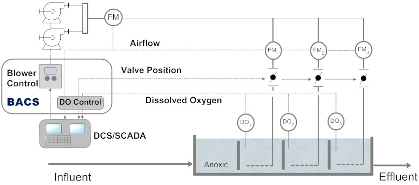
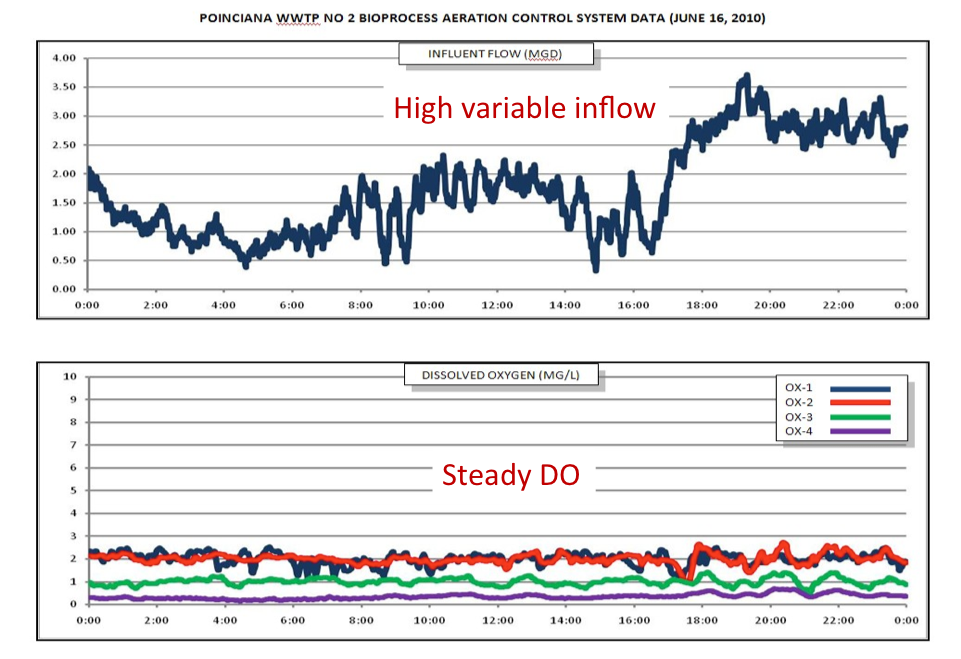
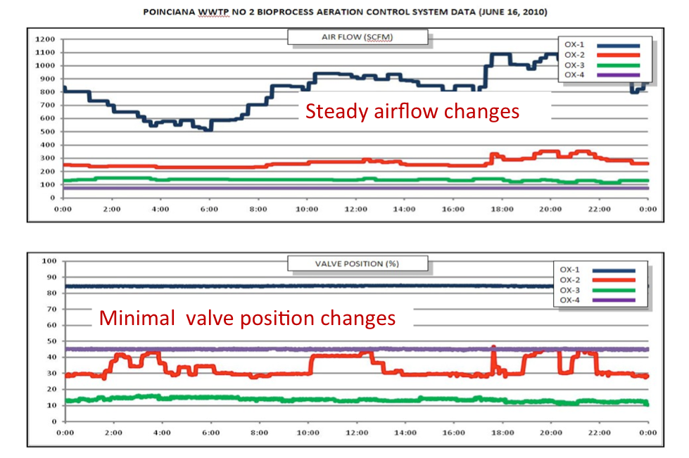

BACS
生物工艺曝气控制系统（BACS）利用基于过程的计算，将曝气鼓风机的控制与反应池控制阀的控制相结合，在各独立曝气区（见下图）实现精确的溶解氧（DO）浓度。这反过来可稳定处理过程，提高处理效率，并将曝气能耗降低多达40%。BACS 具有传统反馈控制无法提供或难以实现的独特功能，包括"最开阀"逻辑、针对所有过程和条件变化的自整定，以及减少阀门执行机构磨损。
传统的曝气控制系统采用 PID（比例-积分-微分）控制环路的方法：

生物工艺曝气控制系统概述
实践经验表明，PID 控制是控制剩余 DO 浓度的一种效果欠佳的方法。PID 参数通常针对平均或典型的进水条件进行整定。然而，由于污水厂的污染负荷全天不断变化，实际条件从来不是真正的"平均"状态，因此根据当前负荷情况，通常会出现以下两种情形之一。在低负荷期间，PID 控制环路系统会出现过度整定，导致好氧区 DO 浓度产生大幅振荡。而在高负荷期间，当 PID 控制环路整定不足时，由于控制系统试图"追赶"需氧量的增加，会出现 DO 浓度偏低的情况。由于进水流量的负荷持续变化，这意味着处理系统几乎从未在高效运行状态下运行。

此外，鼓风机控制与阀门控制之间缺乏通信，且各阀门控制相互独立，因此任何一区气流量的变化都可能导致压力振荡和控制环路之间的不稳定。
BioChem BACS 不使用 PID 控制环路，而是采用专有的三步法来维持溶解氧设定值。首先，BACS 利用各控制区气流量的变化和剩余 DO 来计算呼吸速率的变化，并据此计算各区的需气量。其次，它将总需气量（各区需气量之和）发送给鼓风机控制。最后，当鼓风机达到新设定点后，BACS 快速高效地调整各好氧区的控制阀，提供控制系统计算出的气流量。然后保持一切稳定，直到系统稳定（通常为10至15分钟），然后重复该过程。

采用这种方法，BACS 曝气控制系统能够将鼓风机控制与 DO 控制整合，无论负荷条件如何变化，均能将 DO 浓度维持在非常接近 DO 设定值的水平——这是对 PID 控制环路性能的巨大改进——最终实现在较低压力下更低的总气流量，从而降低电能消耗。
总结来说，BACS 的主要优势包括：
请联系我们，了解更多有关 BACS 如何提高您系统效率的信息。